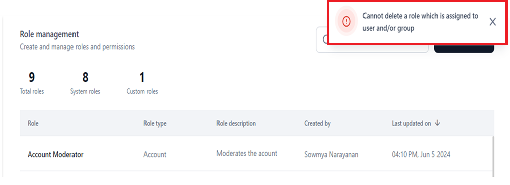

Role Management¶
GALEs Role Management feature in the Settings console helps implement Role-based Access Control (RBAC) for both account and agent features on the platform.
Thus, the roles can be classified based on role types. Learn more.
When you invite/add a user to your account, you must assign a default role to them to define their module-wise permissions and access levels. You can later reassign a different role to the user, including a default/system-defined or custom role. Learn more about Users Management.
Key Points
-
Master Admin Role
-
When you create an account, you automatically become the account owner and are assigned the Master Admin role. Learn more.
-
As the Master Admin, you have the highest level of access, allowing you to create, modify, and delete permissions for custom roles and manage users in your account.
-
-
Assigning Roles
- Once a user joins your account, assign them a role based on their responsibilities and job functions. By default, the Viewer role is assigned to new users joining your account, providing the minimum level of account access required. Learn more. This role can be changed later in the Settings console. Learn more.
-
Default and Custom Roles
- Each role comes with specific permissions and access levels to determine what features the user can access, modify, or manage. Learn more.
GALE supports the following roles in the Settings console:
-
Default Role: A system-generated role with internally defined set of permissions and access levels. Learn more.
-
Custom Role: Allows you to customize permissions and access levels for your users. Learn more.
-
Role Management Benefits
- Enables better control over user actions in your account.
- Facilitates updating roles when job functions or responsibilities change.
- Ensures prompt revocation of access when a user leaves the organization or no longer requires access.
Account and Agent Level Features¶
The features for which permissions and access levels are defined for a role include the following:
Account Level
- Agents
- Models
- Playground and Experiments
- Settings including Integrations, User Management, Security and Control, Monitoring, Guardrails, and Billing.
Agent Level
- Create an agent version
- Share/unshare agents/assign agent roles
- Delete agent
- Export Agent
- Monitor Trace of an Agent
- Edit Agent Workflow
- Manage Agent Configuration
- Manage deployment - deploy/undeploy
- Manage guardrails configuration
- Create/Delete an API key
- Monitor Audit logs
To learn more about permissions and access levels around features, click here.
Access to account or agent-level permissions can either be disabled (no access) or enabled with Full, Custom, or View privileges. Learn more.
Roles¶
A Role groups users according to their job functions, streamlining permission management.
Example
A Master Admin has complete control over the account's core functionalities such as models, agents, integrations, users, etc.
An Agent Admin has complete control over the core functionalities of agents, such as deployment, configuration, sharing, deletion, monitoring, etc.
GALE supports the following roles:
System-defined Roles¶
Also called Default roles, these are inbuilt n the system at the account and agent levels defined in the system. The scopes, permissions, and access levels for these roles are preset based on what users commonly require and cannot be modified in the application. Also, system roles cannot be deleted.
To modify a user's scope and permissions, you must add a custom account/agent-type role. Learn more.
System-defined, system-generated, or default roles provide baseline control over the core features and functionalities and streamline the user management process for administrators.
For example, The Admin role typically has full access to all agent/account features and functionalities within the system. Administrators have the highest privileges and can manage other users, configure settings, and perform administrative tasks.
The following table summarizes the scope for different system roles supported for Account and Agent type:
| Account | |
| Role | Description |
| Master Admin | Users have complete control over agent and model management, user administration, integrations, security settings, and access to all core features and functionalities. |
| Admin | Users have access to all the permissions except model deletion, billing, and Kore connector. |
| Member | Users can create agents, add external models, and modify only S3 integration. |
| Viewer | Users can only view the modules across the platform. |
| Agent | |
| Role | Description |
| Agent Admin | Users have complete control over agent management, versioning, sharing, deployment, deletion, configuration, monitoring, and API key creation. |
| Agent Manager | Users have access to all the permissions except for agent deletion. |
| Agent Editor | Users can create new versions and deploy, monitor, and export agents. |
| Agent Viewer | Users can only view the node details and generate output in the agent. |
Custom Roles¶
The admin can add these roles at the account/agent level. The scopes, permissions, and access levels can be custom-configured. Custom user roles allow for more fine-grained control over what actions different users can perform for at the account and agent levels.
Organizations can tailor access levels to their specific needs and organizational structure. This customization helps assign only the required permissions to specific users and improve security through role-based access.
For example, a custom role, Banking Agent Conversation Moderator, can be customized for full access to agent guardrail configuration permission and no access to create and deploy an agent.
Key Considerations¶
-
After creating a custom role, it will appear in the dropdown menu of the email invitation template. You can then select and assign this role to the user you invite to your account.
-
You cannot delete a custom role if it is currently assigned to active users or included in an email invitation. The system displays an error message, as shown in the screenshot below. 
{kind=link}
{kind=link}
To proceed, you must first unassign the role or assign an alternative role to these users, and then you can delete the custom role.
Permissions¶
A Permission is a specific action or a set of actions the user can perform for the assigned role on either agent or account types. Examples include creating an agent, adding an external model, adding a user, and assigning a role.
Access Levels¶
The Settings console supports two types of access: Yes indicates the user role has access to a modules permission, and No means the user has no access. When the system/custom user role has access, the extent/level of access at the account or agent level is defined by the following presets:
- View: The user can view the account and agent level but cannot edit or delete it.
- Custom: The user can view, add, and edit account and agent data but not delete it.
- Full: The user can view, add, edit, and delete account and agent data.
- No Access: The user cannot access the feature.
Learn more about Module-wise permissions and access levels.
Role Types¶
A Role Type defines the module-wise scope and access level for the defined permissions and associated actions.
The following Role Types are defined on GALE:
- Account: Users invited to the account must be assigned an Account role (default or custom). The role type manages access to features at the account level like models, agents, other users, integrations, and security permissions.
- Agent: When a user is invited to an agent, they receive an Agent role. The role type manages access to features at the agent level like agent creation, deployment, versioning, deletion, monitoring, API integration, experimentation, export, etc.
A user can have an Account role within the account and one or more Agent roles within different agents. Agent roles are determined at the agent level, and you can assign these roles to users who are invited to your agent.
Module-wise Permissions and Access Levels¶
The following table summarizes the module-wise permissions and access levels for default admin, and agent roles.
| Module | Permission | Default Admin Role | |||
| Master Admin | Admin | Member | Viewer | ||
| Access Level | |||||
| Agents
|
Create an Agent | Yes
|
Yes
|
Yes
|
No |
| Models | Access to Model (View is the default access for a custom role) | Full | Custom | Custom | View |
| Add an external model | Yes | Yes | Yes | No | |
| Create a custom model and perform fine tuning | Yes | Yes | No | No | |
| Add opensource model | Yes | Yes | No | No | |
| Manage Deployment - deploy/undeploy/redeploy | Yes | Yes | No | No | |
| Create or Delete an API Key for a model | Yes | Yes | No | No | |
| Export Model | Yes | Yes | No | No | |
| Delete Model | Yes | No | No | No | |
| Model Configuration | Yes | Yes | No | No | |
| Playground and Experiments | Access to Playground | Yes | Yes | Yes | Yes |
| Create an Experiment
|
Yes | Yes | Yes | No | |
| Access to Settings (Only if the settings permission is 'Yes' the user will see all the permissions) | Full | Custom | Custom | No Access | |
| Access to guardrails at the account level | Yes | Yes | Yes | Yes | |
| Deploy/ Undeploy a guardrail (for all agents) | Yes | Yes | Yes | No | |
| Access to Integrations (Full is the default access) | Full | Full | Custom | View | |
| Integrations | Weights & Biases | Yes | Yes | Yes | No |
| Hugging Face | Yes | Yes | Yes | No | |
| AWS S3 Bucket | Yes | Yes | No | No | |
| SearchAssist | Yes | Yes | No | No | |
| Users Management | Access | Full | Full | No access | No access |
| Invite User (via email or import) | Yes | Yes | No | No | |
| Bulk Import Users via files | Yes | Yes | No | No | |
| Assign/revoke system roles to users & manage profile and status | Yes | Yes | No | No | |
| Groups | Yes | Yes | No | No | |
| Enrolment | Yes | Yes | No | No | |
| Directory Sync to enroll users | Yes | Yes | No | No | |
| Manage Agent Roles (Create and edit Custom roles), assign/revoke users | Yes | Yes | No | No | |
| Manage Admin Roles (Create and edit Custom roles), assign/revoke users | Yes | Yes | No | No | |
| Remove Users | Yes | Yes | No | No | |
| Preferences | Yes | Yes | No | No | |
| Manage User Settings (profile fields): Users with the permissions to manage user settings can bulk change permissions. | Yes | Yes | No | No | |
| Security and Control Settings | View and update the Security and Control Settings for your account | Yes | Yes | No | No
|
| Monitoring | Yes | Yes | No | No
|
|
| Billing: Plans, invoice, subscribe & unsubscribe, token usage | Yes | No | No | No | |
| Agent Management | Yes | Yes | No | No | |
| Guardrails | Access to guardrails at the account level | Yes | Yes | Yes | Yes |
| Deploy/ Undeploy a guardrail (for all agents) | Yes | Yes | Yes | No | |
| Other Permissions | Approve & publish agent deployment requests | Yes | Yes | No | No |
| Configure and manage Single Sign On | Yes | No | No | No | |
| Initiate, enable & disable Kore.ai connector | Yes | Yes | No | No | |
| API Scopes for users, roles, and agents in your account. | Yes | Yes | No | No | |
| Manage Apps and Model Deployment requests approvals and publishing | Yes | Yes | No | No | |
| Allow users to integrate | Yes | Yes | No | No | |
| Monitor agents and models on the GALE level | Yes | Yes | No | No | |
| Module | Permission | Default Agent Role | |||
| Agent Admin | Agent Manager | Agent Editor | Agent Viewer | ||
| Access Level | |||||
| Agents | Access to Agent (Custom is the default access for a custom role) | Full | Custom | Custom | View |
| Create an Agent Version | Yes | Yes | Yes | No | |
| Share Agents/ Unshare Agents/ Assign Agent Roles/ Remove users | Yes | Yes | No | No | |
| Delete Agent | Yes | No | No | No | |
| Export Agent | Yes | Yes | Yes | No | |
| Monitoring Trace of an Agent | Yes | Yes | Yes | Yes | |
| Editing Agent Workflow | Yes | Yes | Yes | No | |
| Agent configurations | Yes | Yes | Yes | No | |
| Create/Delete an API Key | Yes | Yes | No | No | |
| Deployment | Manage Deployment - deploy/undeploy/redeploy | Yes | Yes | Yes | No |
| Guardrails | Manage Guardrails Configuration | Yes | Yes | Yes | No |
| Monitoring | Audit Log | Yes | Yes | No | No |
Role Management Dashboard¶
The Role Management Dashboard on the Settings console displays key information.
To access the dashboard, follow the steps below:
- Log in to GALE and click Settings on the top menu.
- Click Users Management > Role Management on the left menu.
{kind=link}
The Role Management dashboard displays the following:
-
The summary of counts for the following:
- Total Roles: The total count of system and custom roles in the system.
- System Roles: The count of the predefined, system-generated user roles.
- Custom Roles: The count of the user roles created and configured by the system admin.

-
A Table view of the following system and custom role details:
- Role: The name of the system-generated role or the custom role you have created.
- Role Type: The role type defines its scope, including Account or Agent.
- Description: This is the description of the role. System roles are predefined, while you must provide custom role descriptions. Hover over the description text to view the entire description.
-
Created by: For system-generated roles, System is displayed. For custom roles, the name of the user who created the role is displayed, as shown in the image below. This user can be the account owner or another user in the admins account.
-
Last Updated On: The local time and date when the custom role was last updated are displayed. This information does not appear for system roles, as they cannot be modified.
{kind=link}
Search a Role¶
To look up a system or custom role, follow the steps below:
- Navigate to the Role Management dashboard.
- Click the Search text field.
- Enter the role you want to search for. All the matching results are displayed.
{kind=link}
If no results are found, the following message is displayed.
{kind=link}
Manage System Roles¶
You can perform the following actions on the system-generated roles.
Important
System roles cannot be created, modified, or deleted since the role and its permissions are predefined in the system. However, they can be duplicated as Custom Roles and modified.
View Role Information¶
To view the details of a system-defined role, follow the steps below.
- Navigate to the Role Management dashboard,
- Click the Ellipses icon for a system role.
- Select View.

The following information is displayed:
- Role Title along with Role Type.
- Summary information on the role.
- Role Name
- Role Description
- Role Type
- Configuration panel to enable/disable access and set access levels for the listed permissions at the agent/account level. Click here to see the module-wise permissions and access levels for different roles.

Duplicate System Role¶
If you want to add a custom role by copying the scope and permissions of a system role, you can use the Duplicate functionality. This feature automatically duplicates the system role, copying its name, role type, and permission/access configurations, and creates it as a custom role. You can then modify, delete, or duplicate this custom role to create multiple copies and add module-wise permissions/access for each.
Note
- The changes you make to the duplicate role do not apply to the original system role.
- The Last Updated On value is displayed for duplicate roles and shows the date and time when the duplicate was created.
Steps to Create a Duplicate Role
To duplicate a system role, follow the steps below:
- Navigate to the Role Management dashboard.
- Click the Ellipses icon for a system role.
- Select Duplicate.
{kind=link}
The duplicate custom role displays the system role name followed by a suffix copy, as shown below. You can edit the name if required.

Manage Custom Roles¶
Custom roles can be edited, deleted, or duplicated on the Settings console. They help customize a set of permissions and set access levels according to enterprise's requirements.
Add a Role¶
To add a custom role, follow the steps below:
- Navigate to Role Management on the Settings console.
-
Follow the steps below in the New Role window:
- Enter Role Name & Role Description.
- Select the Role Type from the dropdown.
-
Follow the steps below if you select Role Type as Account.
- Enable/select the access level for module-wise permissions in the Enable/Disable agent access section. Learn more about module-wise permissions and access levels you can configure for a custom role.
-
Select the checkbox to enable the permissions (set to Yes) or unselect to disable (set to No) for the following:
-
Create Agents
- Models
- Playground and Experiments
- Integrations
- User Management
- Security and Control Settings
- Manage Guardrail Models
- Billing
-
Select the access level for Models, Settings, Integrations, and User Management from the following options:
{kind=link}
{kind=link}
{kind=link}
{kind=link}
{kind=link}
Important Considerations
-
First, select the access level for Models to enable its permissions.
Missing this step automatically disables the permissions.
-
Selecting Full automatically selects all the module permissions.
-
Selecting Custom allows you to enable only the required module permissions.
-
Selecting View and No Access disables permissions selection.
-
Selecting Full for Settings automatically sets the access levels of Integrations and User Management to Full.
{kind=link}
{kind=link}
{kind=link}
{kind=link}
{kind=link}
Additionally, it automatically enables all the permissions for the following modules:
- Integrations (View is always enabled by default as it is the minimum required permission).
- User Management
- Security and Control Settings
- Manage Guardrail Models
- Billing
- Selecting No Access for Settings automatically sets the access levels of Integrations to View and User Management to No Access.
{kind=link}
{kind=link}
Additionally, it disables all the permissions for the following modules:
- Integrations (The View permission is always enabled by default).
- User Management
- Security and Control Settings
- Manage Guardrail Models
- Billing
{kind=link}
Selecting Custom for Settings automatically sets the Integrations and User Management access levels to Custom.
{kind=link}
You can enable the required permissions for the following modules:
- Integrations
- User Management
- Security and Control Settings
- Manage Guardrail Models
- Billing
{kind=link}
You can change Custom to Full or View for Integrations and Full or No Access for User Management.
{kind=link}
If you select Role Type as Agent, follow the steps below:
- Select Custom, View, or Full for Access. Learn more.
View is the default selection.
{kind=link}
- Set up the agent permissions as follows in the Enable/Disable agent access section:
-
If you select View for Access, permissions selection is automatically disabled.
-
If you select Full for Access, all the permissions are automatically enabled.
-
If you select Custom for Access, you can enable the required agent permissions and customize the role.
-
Click Create.
{kind=link}
{kind=link}
{kind=link}
The new custom role is created and listed on the Role Management dashboard.
{kind=link}
Edit a Custom Role¶
You can modify the role name, description, and access levels for account type or agent type roles permissions on the Settings console.
Note
- The system does not allow changing the Role Type once it is set. You must create a new custom role to assign a different role type.
- When a custom role is updated, it changes the permissions for the assigned users.
To update a role, follow the steps below:
- Navigate to the Role Management dashboard on the Settings console.
- Click the Ellipses icon for the custom role you want to modify.
-
Edit the required values for the following In the Update Role window:
- Role Name
- Role Description
{kind=link}
Reset the access levels for module-wise Permissions in the Enable/disable agent access section based on the roles requirements.
Note
The Role Type field is disabled for editing.
{kind=link}
{kind=link}
A success message is displayed upon completing the role edit, and the updated role details appear on the dashboard.
{kind=link}
Delete a Custom Role¶
You can delete a custom role if you want to permanently remove it from the system and unassign it from users.
Note
You can only delete one role at a time. Bulk delete is not supported.
Prerequisite
Before you delete a role, ensure that the custom role is not assigned to any active users. If the role is assigned, do one of the following:
-
Reassign an alternative role to the active users. Learn more.
-
Remove Inactive users to whom this role is assigned.
To delete a role, follow the steps below:
- Navigate to the Role Management dashboard on the Settings console.
- Click the Ellipses icon for the custom role you want to delete.
-
Select Delete.

{kind=link}
A success message is displayed, and the role is deleted from the Role Management dashboard.
Role Deletion Error and Workaround¶
The Settings console allows you to delete only unassigned roles. If a role is assigned to active/inactive users during deletion, the following error message is displayed.
{kind=link}
You must perform one of the following workarounds.
Reassign an Alternative Role to Active Users¶
- Navigate to Users Management > Users on the Settings Console.
- Click the Account Role entry for the user.
- Select the role you want to reassign.
{kind=link}
Once you reassign the role for the user, go to the Role Management dashboard and delete the role using the steps mentioned here.
The role is deleted successfully from the Role Management dashboard and the count for custom roles is updated (decreased).
{kind=link}
Delete Assigned Users¶
Navigate to the Users Management dashboard and follow the steps mentioned in the Delete Users section to delete all the assigned users individually or in bulk. Once the user is deleted, go to the Role Management dashboard and delete the required custom role.
Deleting the assigned users removes their association with the role you want to delete.
Duplicate a Custom Role¶
Like a system role, you can duplicate a custom role, which copies the name, role type, and configurations for permissions and access. Follow the steps mentioned here to complete the process for a custom role.
{kind=link}